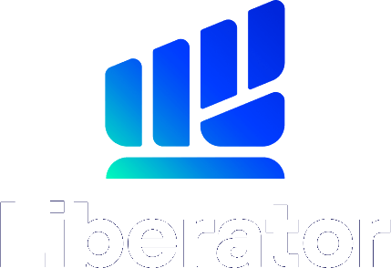

แคมเปญเปิดตัวฟีเจอร์ AI
AI คิดให้ คุณตัดสินใจ
แถลงข่าว 29 ต.ค. · ใช้ได้จริง 9 พ.ย. · KOL โพสต์ถึง 20 พ.ย. 2569 · 4 ระยะ
ภาพรวม
KOL ทั้งหมด
0
Reach รวม
0
ยืนยัน / ตัดออก
0 / 0
จำนวนคนในแต่ละระดับ (กดเพื่อกรอง)
มีอัปเดตใหม่
มี KOL ที่อยากเพิ่มเข้ามา?
กรอกชื่อ/ลิงก์ ทีมจะตรวจสอบและใส่ในแผนให้ — ทุกคนที่มีลิงก์นี้เพิ่มได้
#KOLผู้ติดตามยืนยัน / ตัดออก
0/ 50
ทีม KOL 50 คน
ผ่านแล้ว 0 · เหลืออีก 50 ช่อง
ช่องในทีม ทีมงาน MIDI คัดมาให้แล้ว (สาย IT/Technology) · เรียงตาม reach · ว่าง = รอเติม
ระดับผู้ติดตามของทีม
สมดุลหมวดคอนเทนต์
Hashtag กลาง: · ทุกโพสต์แนบลิงก์/โค้ดรายคนเพื่อวัดการดาวน์โหลด-เปิดบัญชี
จัด KOL ลงระยะ ทุกคนในทีม (ยกเว้นที่ตัดออก) · เลือกได้มากกว่า 1 ระยะ
✨ แผนที่ AI + ประสบการณ์ MIDI ที่เก็บค่าสำเร็จไว้ แนะนำ
เป็นการนำเสนอแผน — สามารถปรับแก้ไขได้ทุกคน
1
Announce — แถลงข่าว 29 ต.ค.สายข่าวเทค/การเงินรายงานการแถลงภายใน 24 ชม. · ข้อความเดียวกันทุกช่อง "ใช้ได้จริง 9 พ.ย. — สมัคร/เปิดบัญชีไว้ก่อนได้สิทธิ์ก่อน" · ยังไม่โชว์ฟีเจอร์เต็ม
2
Build-up — เปลี่ยน "รอ" เป็น "จอง"สายความรู้สอน AI/MCP ช่วยลงทุนยังไง-ไม่ช่วยอะไร · ไลฟ์สไตล์ตั้งคำถามชีวิตนักลงทุน · นับถอยหลัง · ทุกโพสต์ชี้ไปสมัคร beta / เปิดบัญชีก่อน 9 พ.ย. · รีวิวแอปปัจจุบันที่ใช้ได้เลย
3
Launch & Prove — 9 พ.ย. ทุกช่องใน 48 ชม.Mega/Macro เดโมหน้าจอจริงพร้อมกัน (surround ≥3 ครั้ง) · ตามด้วย How-to ทีละขั้น · รีวิว "ไม่เกินจริง" บอกข้อดี-ข้อจำกัด · ตอบข้อกังวลเรื่องความปลอดภัยและ AI ผิดได้ไหม
4
Convert — เปิดบัญชี / ใช้จริงMicro/Nano + ไลฟ์สไตล์เล่า use case ในชีวิตประจำวัน · โค้ด/สิทธิ์รายคน (วัดผลได้) · ชวนเพื่อน · รีแคปฟีเจอร์ที่ชอบที่สุด 1 อย่าง
เหตุผลรายคน
ทำไมต้องแบ่ง 4 ระยะ Announce → Build-up → Launch & Prove → Convert หลัก Product-launch PR ที่เอเจนซี่ระดับสากลใช้กับฟินเทค/แอป
Announce · 15%
Build-up · 25%
Launch & Prove · 40%
Convert · 20%
เป้าหมาย: วันเปิดใช้จริง (9 พ.ย.) ต้องมีคน ≥40% ของทีมโพสต์ใน 48 ชม. — ฟีเจอร์ใหม่ถูกจำได้จาก "วันเดียวที่ทุกคนพูดถึง" ไม่ใช่จากโพสต์กระจายบาง ๆ
1 · Teaser สร้างความอยากรู้ (Curiosity gap)คนจำ "คำถาม" ได้ดีกว่า "ประกาศ" — 11 วันระหว่างแถลงข่าวกับวันเปิดใช้ ให้ครีเอเตอร์ตั้งคำถามว่า AI ควรช่วยลงทุนแค่ไหน และชวนจองสิทธิ์ ทำให้วันเปิดใช้มีคนรออยู่แล้ว และแบรนด์ได้บทสนทนาที่ตรงกับจุดขาย "AI คิดให้ คุณตัดสินใจ"
2 · เปิดตัวแบบพร้อมกัน (Launch-day surround)หลัก effective frequency: ต้องเห็น ≥3 ครั้งจากหลายแหล่งก่อนลงมือ — Mega/Macro โพสต์ไล่กันใน 48 ชม. สร้าง "เห็นทุกที่" ให้อัลกอริทึม TikTok ดันหัวข้อเดียวกัน ถ้ากระจายทั้งเดือนจะไม่ถึงเกณฑ์
3 · การเงินต้องพิสูจน์ก่อนขาย (Trust before conversion)สินค้าลงทุนมีต้นทุนความเชื่อใจสูง — How-to และรีวิวที่พูดข้อจำกัดตรง ๆ ช่วงหลังเปิดตัว คือสิ่งที่เปลี่ยน "น่าสนใจ" เป็น "กล้าลอง" และลดคอมเมนต์เชิงลบเรื่อง AI ตัดสินใจแทน
4 · อัลกอริทึมมีช่วงหน่วง (Algorithm lag)คลิป TikTok ทำยอดส่วนใหญ่ใน 2–5 วันหลังโพสต์ — โพสต์สอนใช้ 10–15 พ.ย. จะไปถึงคนตอน 12–18 พ.ย. ต่อเนื่องเข้าโค้งสุดท้ายพอดี
5 · ปิดด้วยเดดไลน์ (Urgency & CTA)5 วันสุดท้ายใช้สิทธิพิเศษ/โค้ดรายคนและขั้นตอนเปิดบัญชีที่สั้นที่สุด — Micro/Nano มี engagement สูงกว่าและคอมเมนต์ตอบได้ทัน เหมาะกับการปิดการตัดสินใจมากกว่าบัญชีใหญ่
6 · วัดผลรายคนแล้วเทงบซ้ำ (Measure & re-weight)ทุกโพสต์มีลิงก์/โค้ดของครีเอเตอร์ — ดูยอดดาวน์โหลด/เปิดบัญชีหลังสัปดาห์เปิดตัว แล้วเพิ่มโพสต์ให้คนที่ทำยอดได้ก่อน 16 พ.ย.
ตารางโพสต์ ลากรูป KOL ไปวางในช่องวัน · วางได้หลายวันต่อคน · กดรูปเพื่อดู/แก้แนวคอนเทนต์ · มือถือ: แตะชื่อแล้วแตะวัน
รายการโพสต์ + แนวคอนเทนต์ MIDI ร่างให้ทุกโพสต์ · กดแถวเพื่อแก้/บันทึก · สีสถานะ: วางแผน · บรีฟแล้ว · ส่งดราฟต์ · โพสต์แล้ว
ข้อมูลอัปเดตอัตโนมัติทุก 30 วินาที · ผลพิจารณาบันทึกทันทีที่กด · ระบบบันทึกการใช้งานเพื่อติดตามการพิจารณาLiberator × MIDI digital Co., Ltd.